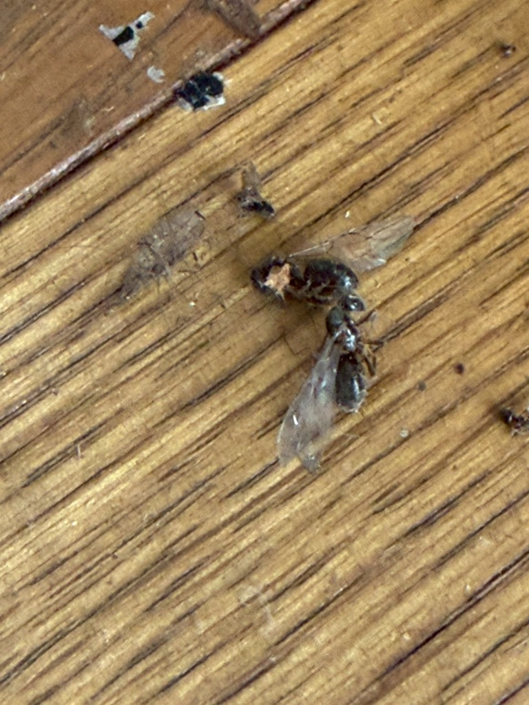
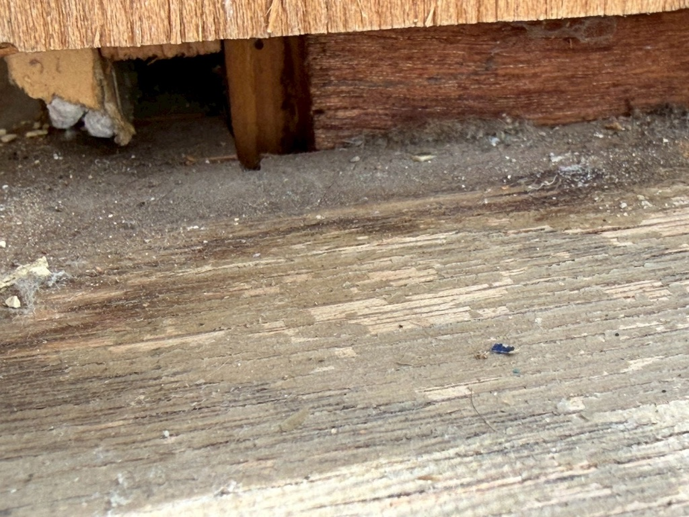

⚠️ シロアリ被害
📅 2026年3月11日
シロアリ→羽アリ…これは本当に危険｜横浜市青葉区の実例
この記事で分かること
- 横浜市青葉区で発生したシロアリ被害の実例
- 雨漏りがシロアリを引き寄せる理由
- 羽アリ発生の危険性と対策
- 早期発見のための4つのチェックポイント

※ 実際に発生したシロアリ
シロアリって、正直かなりヤバいです。
今回、横浜市青葉区のお客様のお宅で、かなり深刻なシロアリ被害が発生しました。
原因はおそらくですが窓周りの雨漏れ。
フローリングが染みていたのに、そのまま放置されてしまい、湿った環境ができてしまった。その結果、シロアリが住みやすい環境になり発生してしまったんです。
本来は床下、でも今回は…
本来、シロアリは床下に出ることが多いのですが、今回はなんと2階の床に発生していました。
これは相当進行している証拠です。

※ 羽アリ（シロアリの繁殖個体）
さらに進行すると、羽アリ（シロアリの繁殖個体）が発生します。
ここまで来ると、家の内部でかなり広がっている可能性があります。

※ シロアリ被害が進行した床下
こんな症状があったら要注意
- ✅ 雨漏れを放置
- ✅ フローリングの染み
- ✅ 床のフワフワ
- ✅ 羽アリを見た
このどれかがある場合、かなり注意が必要です。
家は「湿気」が一番の敵
小さな雨漏れでも、放置すると大きな被害になります。
「まだ大丈夫だろう」
これが一番危険です。
気になる症状があれば、早めの点検をおすすめします。
💡 まとめ
- 雨漏り放置はシロアリを引き寄せる
- 羽アリ発生は被害拡大のサイン
- フローリングの染み・床のフワフワは要チェック
- 早期発見・早期対応が被害を最小限に抑える